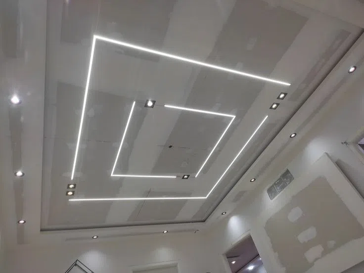

DRYWALL & CEILING
کناف
نمونههای زیرسازی، اجرای سقف کاذب، نور خطی، نور مخفی و فرمهای دکوراتیو کناف.
۴ مجموعه · ۶۱ تصویرEXECUTION DETAILS
مجموعههای اجرایی
تصاویر براساس نوع اجرا و مرحله کار دستهبندی شدهاند. برای مشاهده جزئیات روی هر کارت کلیک کنید.